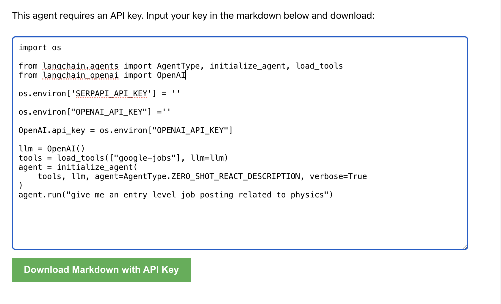
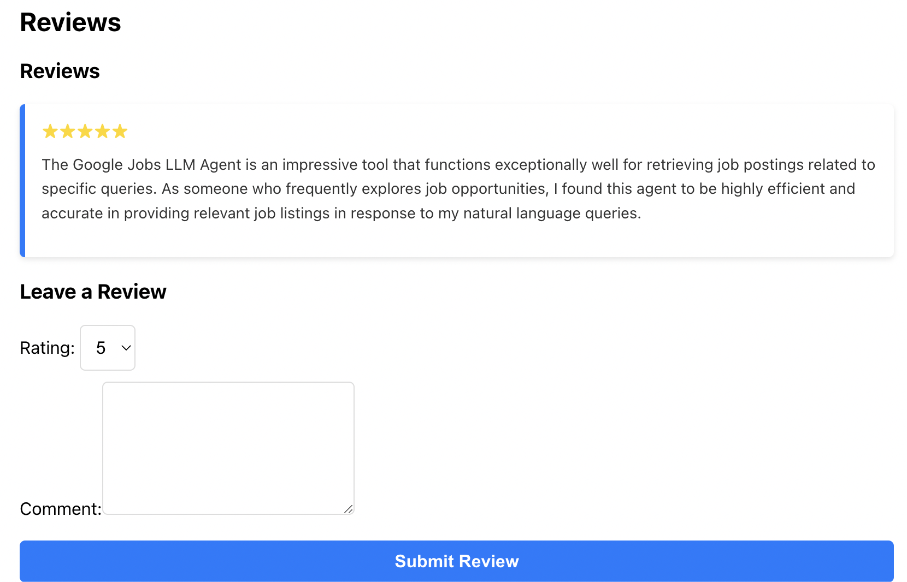
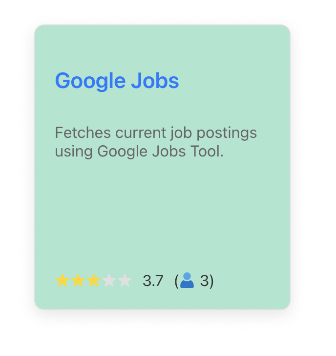
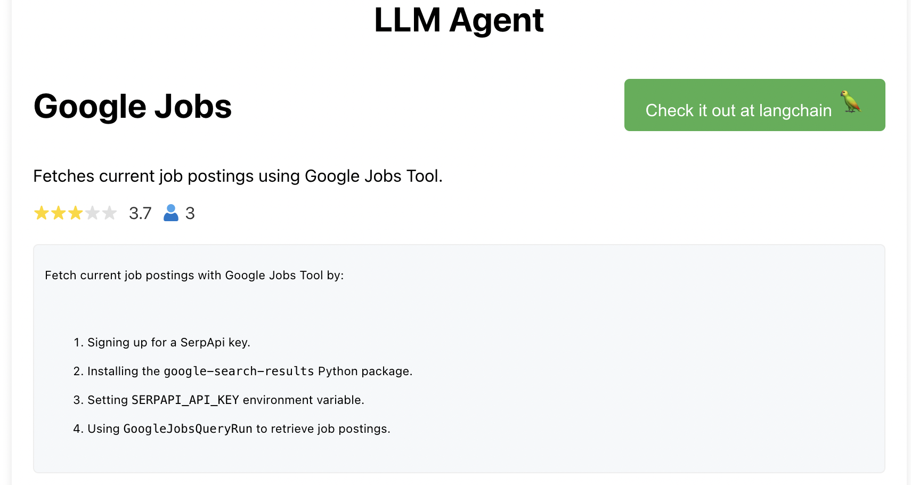
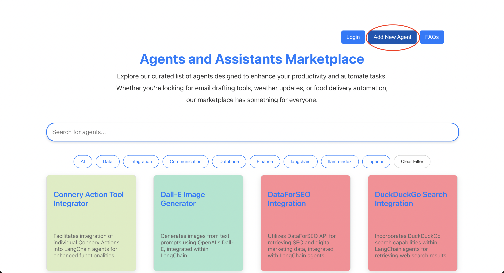
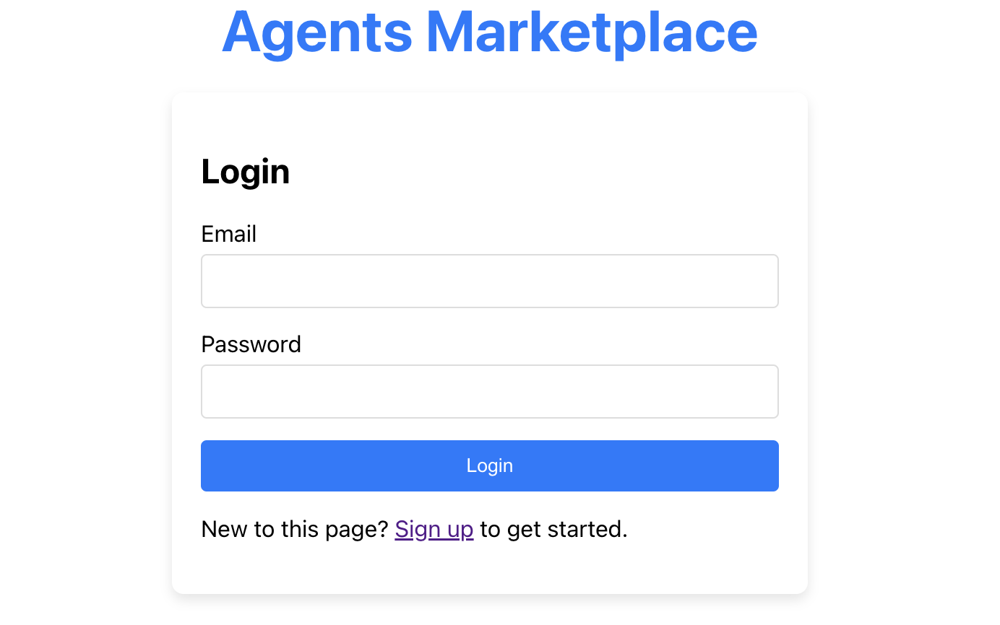
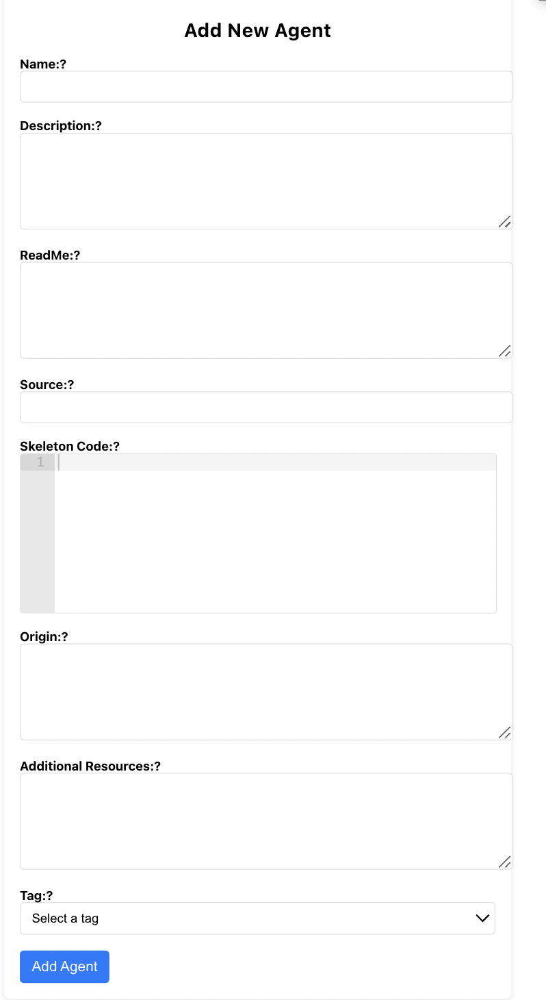
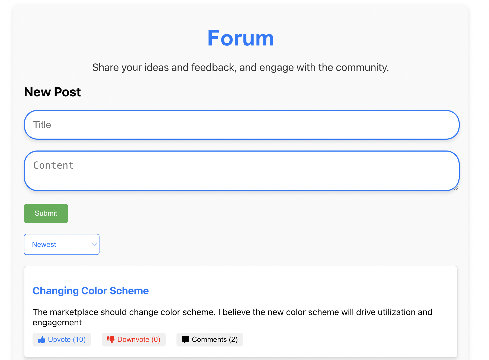
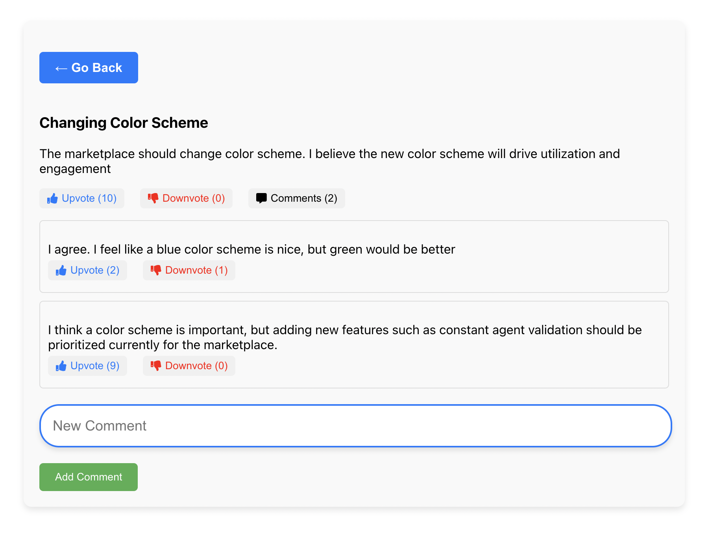

Agents and Assistants Marketplace
Opensource Search Engine for LLM Agents
Featuring over 150 certified agents from Langchain, Llamaindex, OpenAI, and CrewAI, all accessible through a unified interface with user reviews
Nithik Yekollu Ronit Jain Shishir G. Patil
Search and get code to run AI agents from the marketplace such as this Yahoo Finance Agent.
Large Language Models (LLMs) have facilitated the creation of intelligent tools, known as agents, that harness natural language understanding to interact with API services. These LLM agents can execute API calls, interact with various software systems, and automate routine tasks. They have been widely used to build applications due to their numerous benefits.
Organizations such as OpenAI, Langchain, and many others have developed frameworks for creating these agents. Although these frameworks have led to the development of numerous agents that integrate both LLMs and APIs, the absence of a unified platform has limited their exposure and utilization. The Agent Marketplace addresses this issue by offering a centralized platform for users to search, utilize, review, and contribute a variety of LLM agents.
Key Benefits of LLM Agents:
- Expanded functionality: LLM agents allow language models to directly interact with external systems, databases, and APIs, enabling them to perform a much wider range of tasks beyond just text processing.
- Improved Accuracy: By providing LLMs with relevant context and information from up to date sources, LLM agents can generate more accurate, informed, and less biased responses to user queries.
- Automation and efficiency: LLM agents can automate repetitive tasks like data extraction, information gathering, and content creation workflows.
Benefits of the Marketplace
The Agent Marketplace offers a comprehensive and user-friendly platform that streamlines the discovery, deployment, and customization of over 150 verified LLM agents from trusted sources. This open-source ecosystem enhances productivity by centralizing access to a diverse range of agents, fostering community contributions, and ensuring users can easily leverage advanced AI capabilities for various tasks, with an added layer of reliability enabled by user reviews.
Ability to Search Through Agents
The platform functions as an open-source search engine for agents, allowing users to easily discover and deploy over 150 verified LLM agents sourced from trusted and reputable sources such as Langchain, LlamaIndex, OpenAI, and CrewAI.

The marketplace search feature allows users to easily discover LLM agents.
Ease of Utilization
Each agent on the platform can also be run on the user's device by downloading the agent code. Users can further customize the agents to suit their specific requirements by altering the agent source code.

Users can readily download and run code of agents they discover on the platform.
Verification and Categorization of Agents
These agents were sourced and verified from prominent sources such as OpenAI Assistants, LangChain, and LlamaHub. The marketplace categorizes agents into practical categories such as Communication, Finance, Data, and AI enabling users to search through a variety of different agents in a focused manner. Additionally, the homepage features a progress bar that displays which agents have been validated. As the marketplace grows, this progress bar will transition to a dynamic system that continuously runs and validates agents in the marketplace.

The progress bar on the homepage indicates the validation status of agents.
Contribution and Reviewing of Agents
The Agent Marketplace also enables users to publish their agents on a centralized platform. These agents gain increased exposure to the open-source community and can be verified by users through a review feature. Users can easily leave ratings without logging in, and they don't need to provide their name to leave a star rating. Through this app store environment, the platform can accommodate a growing number of reviewed and verified agents and services.

Contributed agents are validated through user reviews.
Agent Rating System
Each agent in the marketplace is given an overall rating, which is an average of user ratings. This provides a clear indication of the agent's performance and reliability based on feedback. Additionally, the number of reviews is displayed, indicating the agent's popularity. Users can see the agent's rating and review count on the agent tiles when searching for agents on the homepage and on the detailed screen for each agent.
 
The left image shows how the agent's rating and review count are displayed on the homepage, while the right image shows the detailed rating view in the agent's detail screen.
Centralization of Agents
By centralizing access to LLM agents, users can seamlessly execute a variety of daily tasks, such as checking weather updates, getting the latest sports news, ordering food delivery, managing emails, and more, all from a single platform.
Overall, the Agent Marketplace serves as an open-source search engine for LLM agents, empowering both businesses and individuals to leverage the capabilities of these agents without the burden of in-house development and maintenance. As an open-source project, the marketplace encourages community contributions, allowing users to submit their own agents. This collaborative platform enables users to focus on their core activities and objectives while benefiting from a continually expanding repository of reviewed and verified LLM agents.
Deploying the Agents
Each agent includes a description of its functionality and a detailed ReadMe file with instructions on how to run it. Users can explore the marketplace and deploy the agents they wish to use locally by following the outlined steps: installing the necessary requirements and obtaining the required API keys, as detailed in each agent's comprehensive ReadMe. Once these prerequisites are met, users can run the agents to accomplish their specific tasks. These agents, powered by LLMs, are capable of executing API calls, making them instrumental in automating interactions with online services. For instance, the Yahoo Finance Agent utilizes the yahoo_finance_news tool to retrieve news articles about specific stocks from Yahoo Finance, responding to precise user inquiries about financial markets.
Similarly, the Google Jobs Agent leverages the Google Jobs Tool to fetch current job postings based on specific user queries. This integration showcases the LLM's ability to handle complex information retrieval tasks, providing users with real-time job market updates directly through the agents on our platform.
Google Jobs Agent Demonstration
Google Jobs agent providing real time postings of request occupation.
Contributing to the Marketplace
Contributing to the Agent Marketplace is crucial for its development and diversity. By submitting agents, contributors directly enhance the platform's functionality and variety, making a broad range of tools available to users for improving efficiency and productivity. Contributions can be made either through the marketplace interface or via GitHub pull requests. Both methods are designed to facilitate the addition of new agents, ensuring the platform remains dynamic and up-to-date.
Adding Agents through the Marketplace
- Go to Agent Marketplace
- Click "Add Agents" at the top right corner.
- Login/Signup if necessary.
- Fill in the agent details:
- Name: The name of the agent.
- Description: A brief description of what the agent does.
- ReadMe: Content of the ReadMe.MD including instructions for use.
- Source: GitHub repository URL of the agent's source code.
- Skeleton Code: Initial code template for the agent.
- Origin: The origin of the agent if applicable.
- Additional Resources: Any additional resources linked to the agent.
- Tag: Tags for categorizing and searching the agent within the marketplace.
- Click "Add Agent" to add your agent to the marketplace.



Adding Agents through a GitHub Pull Request
- Navigate to Agent Marketplace Repository on GitHub.
- Fork the repository.
- Navigate to
server/index.js. - Add your agent to the
agentsDataarray using the following schema:const agentsData = [ { name: "Example Agent", description: "This agent demonstrates...", readme: "Usage instructions here...", source: "https://github.com/username/repository", skeletonCode: "function exampleAgent() {...}", additionalResources: "https://resource.link", tags: ["example", "demo"] } ]; - Submit a pull request for your changes to be reviewed and merged into the main branch.
Community Forum
The Forum is an essential feature of the Agent Marketplace that allows the community to provide input and suggestions on how to improve the platform. Through the forum, users can upvote, downvote, and comment on posts to offer the best advice and recommendations. This interactive space contributes to facilitating discussions within the thriving LLM agent community, providing a centralized spot for users to share their ideas and feedback.
 
The Forum allows users to engage in discussions, provide feedback, and suggest new features. Users can upvote, downvote, and comment on posts to contribute to the community discussions.
Advanced Customization and Potential to Build Applications
Each agent on the platform can be readily utilized and also serves as a framework for user customization, such as modifying the APIs and models employed. This feature personalizes the user experience and enhances the agents' functionality through their modular design. Additionally, these agents can be integrated to develop more complex applications.
Leveraging Complex API Processes
The Agent Marketplace's ability to leverage LLM-powered agents to execute API calls and automate interactions with online services aligns seamlessly with Gorilla's mission of advancing the practical application of AI technologies. By centralizing access to a wide array of services through these intelligent agents, the marketplace serves as a bridge between complex API processes and end-users. The ease of access with the marketplace will allow users to more readily leverage multiple agents to build AI powered applications.
Future Directions
As the marketplace evolves, it will continuously incorporate agents from a broader array of sources, including user contributions. This collaborative approach aims to steadily expand the range of services available on the marketplace, providing users with access to an increasingly diverse set of LLM-powered agents capable of automating a wide variety of tasks and enabling the development of powerful applications. An important next step will be the implementation of a dynamic validation system, ensuring all agents in the marketplace are continually tested and verified.
Join Us
The platform aims to increase open-source contributions and enhance the exposure of LLM agents. By providing an easy way to search for reviewed LLM agents, it seeks to create a reliable and efficient resource for users. The platform's growth relies on user contributions, fostering a collaborative environment that continuously improves and expands the capabilities of LLM agents within the Gorilla LLM initiative.
We hope you enjoyed this blog post. Connect with us on Discord, Twitter (#GorillaLLM), and GitHub.
Citation
If you would like to cite Gorilla:
@inproceedings{agent-marketplace,
title={Agent Marketplace},
author={Nithik Yekollu, Ronit Jain, Shishir G. Patil},
year={2024},
howpublished={\url{https://gorilla.cs.berkeley.edu/blogs/11_agent_marketplace.html}},
}